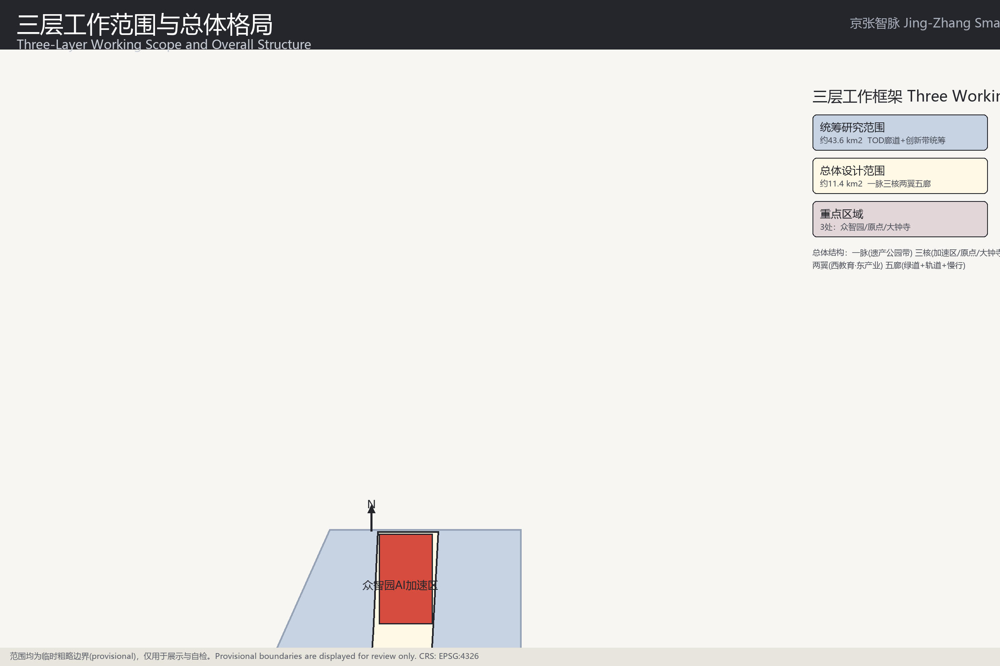
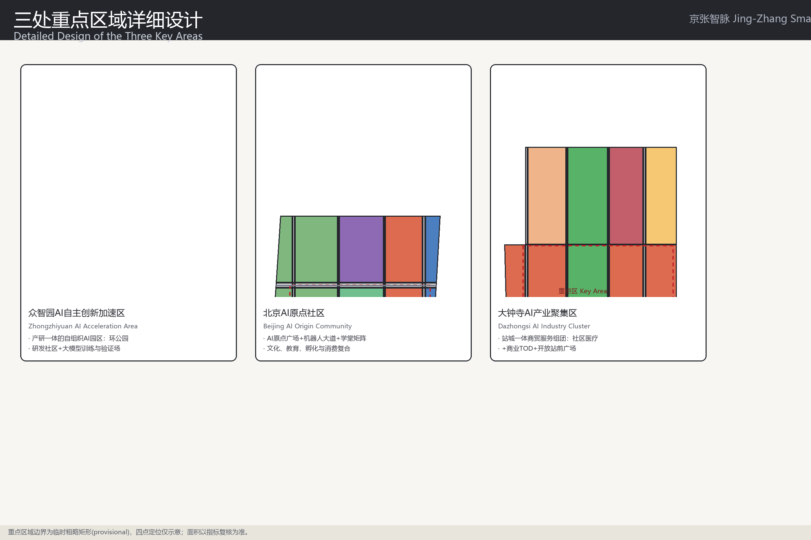
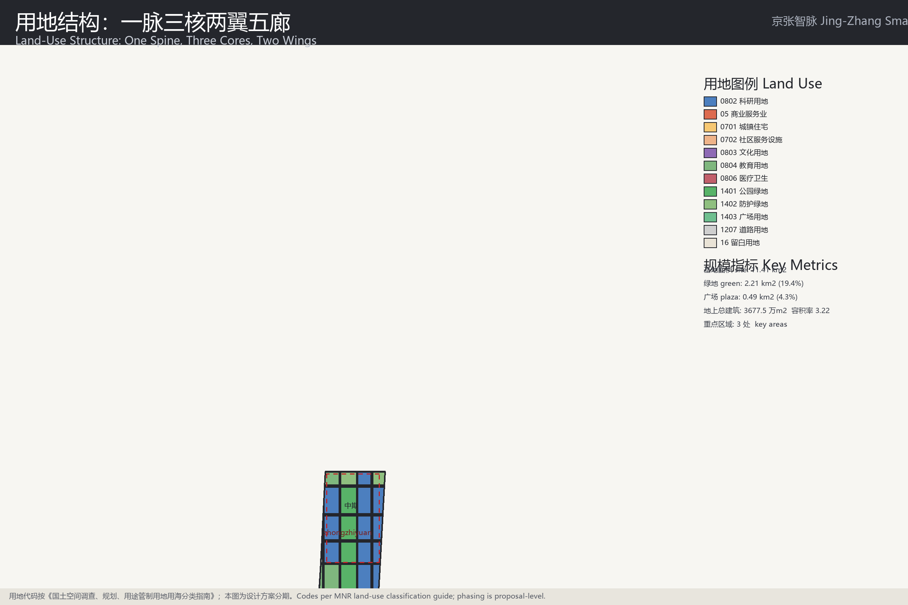
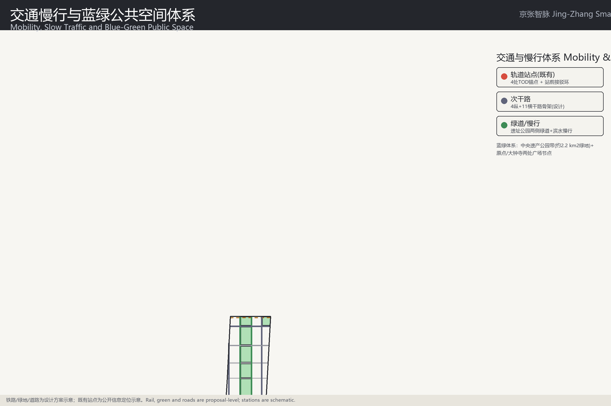

AI agent 正式提交可视化（package: jingzhang-ai-innovation-belt-blueprint，PR author: Anyi-qaq）

总览地图：三层工作范围（统筹研究约43.6km²、总体设计约11.4km²、重点区域3处）与总体格局。边界为临时粗略边界（provisional），展示与自检用途。
详见 proposal.md 三层范围工作框架章节与图 site-overview.png。

重点区域：三处重点区域均为控规深度详细设计；面积见核心指标（key_area_area_*）。重点区边界为临时矩形（provisional），面积与几何复核一致。

用地分区：科研(0802)、商业(05)、居住(0701/0702)、教育(0804)、文化(0803)、医疗(0806)、公园绿地(1401)、防护绿地(1402)、广场(1403)、道路(1207)、留白(16)。用地多边形无缝隙全覆盖基地。

交通慢行：轨道站点4处TOD锚点、4纵11横干路骨架、遗址公园两侧绿道、站前接驳（transit_connection）。E1-交通与慢行优先级（ai-traffic-walkability）。
蓝绿公共空间：中央遗产公园带（含防护绿地，共2211174.011 m²）、广场485272.601 m²（原点广场、大钟寺站前广场、南门户广场）。蓝绿与广场率指标见核心指标。
建筑：1095 栋机读建筑足迹（geometry/buildings.geojson），占地3683592.607 m²（建筑密度0.322759），地上总建设量36775376.696 m²（容积率3.222285）。按多轮渐进式自动化设计与集成生成。
| 分期 | 时间 | 重点更新项目 |
|---|---|---|
| PH-1 近期 | 2026-2029 | AI原点社区公共空间更新、原点广场、大钟寺站前广场TOD更新、成府路/五道口站前接驳 |
| PH-2 中期 | 2029-2032 | 众智园AI自主创新加速区产业更新、遗址公园北段、学清路/清河沿线治理 |
| PH-3 远期 | 2032-2035 | 京张智脉整体串珠成链、城市智能体服务网络全域覆盖 |
详见 proposal.md 更新项目清单、实施政策与分期计划章节。
共设计 12 处场景锚点（三核各4处），见 metrics.json scenario_node_count 与 proposal.md AI章节。
与 geometry 几何复核一致的机读指标：
全部数据见 metrics.json；数值与 spatial review 在EPSG:4548下复核一致。
| 征集任务 | 设计响应 |
|---|---|
| AI创新生态任务包 | 12处场景锚点+6项AI+服务，三核各4处 |
| 城市更新任务包 | 分期更新清单+遗址保护更新（清华园车站旧址） |
| 产业城市设计任务包 | 众智园/原点/大钟寺产城融合详细设计 |
| TOD/轨道站城一体化 | 五道口、大钟寺站前TOD与接驳 |
| 蓝绿与公共空间 | 遗产公园带+两处广场+慢行绿道 |
覆盖对照表见 proposal.md 任务覆盖与 compliance_matrix.json。
| 检查项 | 结果 | 说明 |
|---|---|---|
| validate_submission | 通过/待pr复查 | 结构、标记、双语文案 |
| spatial_review | 通过 | 拓扑、面积与指标复核 |
| visual_review | 通过 | 静态安全与指标一致 |
| professional_review | 待PR后评审 | 提交包由维护者复核后给出 |
边界为 provisional：KEY_AREA_PROVISIONAL 属预期提示；正式红线以官方发布为准。
完整假设见 assumptions.json。
生成：Anyi AI City-Agent（author: Anyi-qaq）· 静态页面无外部依赖。English version: index.en.html